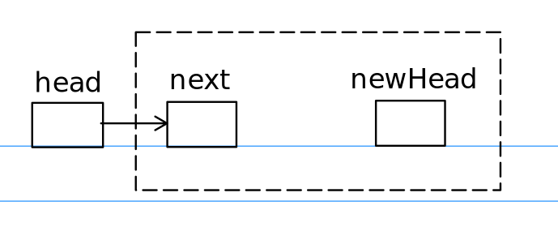
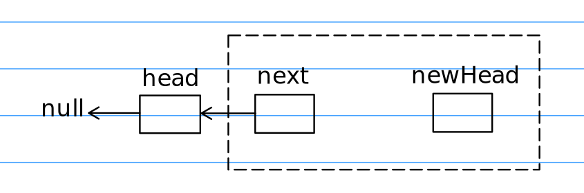

递归部分精髓在于：
一、把重复操作的子问题提取出来。
二、找到跳出递归条件
反转链表
假如将节点head的后续部分看作已经调整好顺序的反向链表，头部为newHead，尾部为next，next.next=null
那么反转操作就变成两个节点的反转了：

1 | newHead = reverseList(next); // 重复子问题 |
经过代码操作后：

弹出条件则是当递归到原链表的底部时1
2
3if(head.next == null) {
return head;
}
这道题也可以使用一个临时结点和多指针来完成，代码链接
找出所有可能的组合
例题：Leetcode 77
我们对 1…n 的数标记是否取到，当递归到长度为 k 时说明到达了递归边界。
若还未到达递归边界则继续按顺序加入标记数组，进行递归。递归后记得取消标记完成回溯操作。
算法Java语言描述1
2
3
4
5
6
7
8
9
10
11
12
13
14
15
16
17
18
19
20
21
22
23
24
25
26
27
28
29
30
31
32
33
34
35/*
给定两个整数 n 和 k (0 <= k <= n)
返回 1 ... n 中所有可能的 k 个数的组合
*/
List<List<Integer>> combine(int n, int k) {
boolean[] flags = new boolean[n+1];
List<List<Integer>> res = new ArrayList<>();
findCombination(res, flags, k, new ArrayList<>(), 1);
return res;
}
/*
res: 储存所有可能的组合结果
flags: 标记1...n是否被取
k: 剩余还需加进comb的数
n: 数据总数
comb: 记录当前的组合
i: 指针在1...n的位置
*/
void findCombination(List<List<Integer>> res, boolean[] flags, int k, List<Integer> comb, int i) {
if(k == 0) {
res.add(new ArrayList<>(comb));
return ;
} else if(i == flags.length) {
return ;
}
// 递归
comb.add(i);
flags[i] = true;
findCombination(res, flags, k-1, comb, i+1); // 取
// 回溯
flags[i] = false;
comb.remove(comb.size()-1);
findCombination(res, flags, k, comb, i+1); // 不取
}
算法C++语言描述：1
2
3
4
5
6
7
8
9
10
11
12
13
14
15
16
17
18
19
20
21
22
23
24
25
26
27
28
29
30
31
32
33
34
35
36/*
给定两个整数 n 和 k (0 <= k <= n)
返回 1 ... n 中所有可能的 k 个数的组合
*/
vector<vector<int>> combine(int n, int k) {
vector<vector<int>> res = vector<vector<int>>();
bool* flags = new bool[n];
vector<int> comb = vector<int>();
findComb(res, n, flags, k, comb, 0);
return res;
}
/*
res: 储存所有可能的组合结果
n: 1...n的长度
flags: 标记1...n是否被取
remain：剩余需要的个数
comb：一个可能的组合
i：遍历指针
*/
void findComb(vector<vector<int>>& res, int n, bool flags[], int remain, vector<int>& comb, int i) {
if(remain == 0) {
res.push_back(comb);
return ;
} else if(i == n) {
return ;
}
// 递归
comb.push_back(i+1);
flags[i] = true;
findComb(res, n, flags, remain-1, comb, i+1); // 取i
// 回溯
comb.pop_back();
flags[i] = false;
findComb(res, n, flags, remain, comb, i+1); // 不取i
}
算法C语言描述：1
2
3
4
5
6
7
8
9
10
11
12
13
14
15
16
17
18
19
20
21
22
23
24
25
26
27
28
29
30
31
32
33
34
35
36
37
38
39
40
41
42
43
44
45
int** ans;
int ans_size;
int temp_size;
void findComb(int** ans, int n, int k, int* temp, int i);
/**
* Return an array of arrays of size *returnSize.
* The sizes of the arrays are returned as *returnColumnSizes array.
* Note: Both returned array and *columnSizes array must be malloced, assume caller calls free().
*/
int** combine(int n, int k, int* returnSize, int** returnColumnSizes){
ans = malloc(MAX_N * sizeof(int*));
int* tmp = malloc(k * sizeof(int));
ans_size = temp_size = 0;
findComb(ans, n, k, tmp, 0);
*returnSize = ans_size;
*returnColumnSizes = malloc(ans_size * sizeof(int));
for(int i=0; i<ans_size; ++i) {
(*returnColumnSizes)[i] = k;
}
return ans;
}
void findComb(int** ans, int n, int k, int* temp, int i) {
if (temp_size == k)
{
int* comb = malloc(k * sizeof(int));
// memcpy(comb, temp, k * sizeof(int));
for (int i = 0; i < k; i++) {
comb[i] = temp[i];
}
ans[ans_size++] = comb;
return ;
} else if(i == n) {
return ;
}
// 递归
temp[temp_size++] = i+1;
findComb(ans, n, k, temp, i+1); // 取
// 回溯
temp_size--;
findComb(ans, n, k, temp, i+1);
}